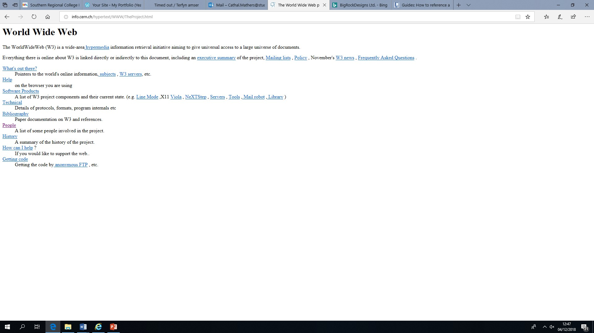
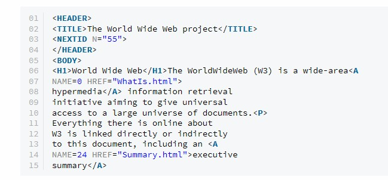
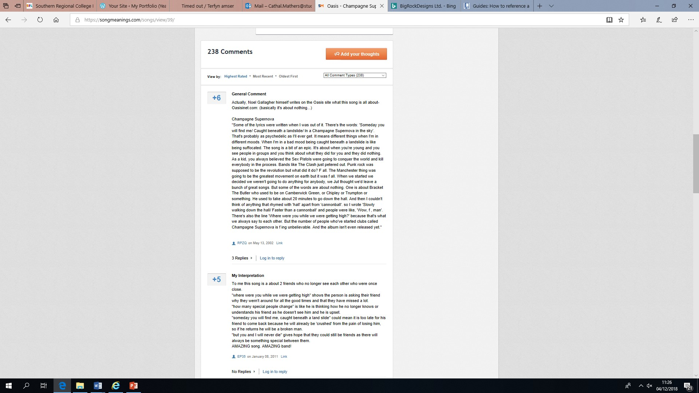
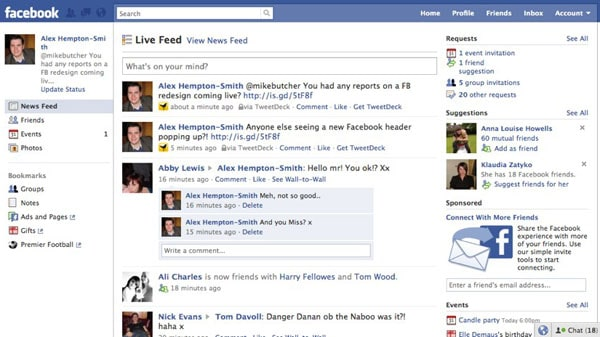
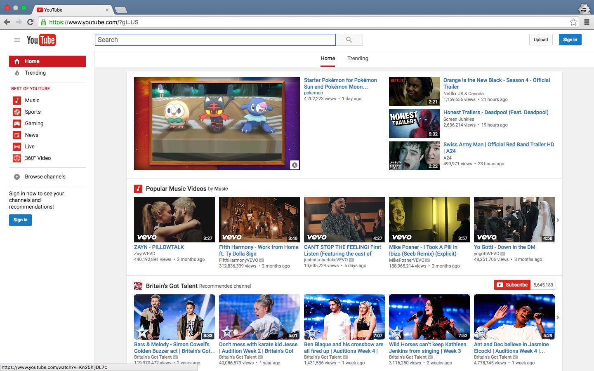

History of the Internet
On August 23rd, 1991, UK computer scientist Tim Berners-Lee completely transformed the way the human race communicated with one another, by creating the World Wide Web. At that time, Berners-Lee worked for the European Organization for Nuclear Research (CERN). This first initial website, (Figure 1) consisted of a page demonstrating the World Wide Web project and its aim was to explain to users how to create their own web pages and setup servers. Berners-Lee was unaware at the time of the impact of this invention and how it would change how the world would communicate with each other.

Figure 1
This is the first website created. As you can see it’s very basic with no styling or creative layout. This was released on the same year HTML was created. The website made use of tags that are still used today, such as the header 1 to header 6 tags, anchors and paragraph tags (see Figure 2).

Figure 2
At the time of this invention, fellow scientists at the European Organization for Nuclear Research felt they needed to access different computers in order to receive information. However, Berners-Lee disagreed with this process, as the internet at this stage was connected to millions of computers; so, there was no need to move between each computer physically. Berners-Lee believed that information could be shared through the use of hypertext which was invented by Ted Nelson in 1965.
“The word "hypertext" was first coined by Nelson in 1963 and is first found in print in a college newspaper article about a lecture he gave called "Computers, Creativity, and the Nature of the Written Word" in January 1965”. - (William Stewart, 2000)
In March 1989, when Berners-Lee proposed the idea of the World Wide Web to his manager, he, surprisingly wasn’t impressed by Lee’s design. Nevertheless, Berners-Lee continued to develop his design and by 1990 he had invented three major components still found in websites today. They were: HTML (Hypertext Markup Language), HTTP (Hypertext Transfer Protocol) and URL (which was previously known as URI - Uniform Resource Identifier). The first web browser, WorldWideWeb was also created by Berners-Lee. This browser allowed many fonts and font sizes as well as the ability to download and display sounds, images, animations etc. The purpose of this new platform was to explain the World Wide Web to new users.
"The WorldWideWeb (W3) is a wide-area hypermedia information retrieval initiative aiming to give universal access to a large universe of documents." - (Markmonitor Inc, 2008)
The invention of the first browser can be traced back to 1990 when Berners-Lee joined with Robert Cailliau, who is a computer scientist who helped in the development of the World Wide Web with Tim Berners-Lee to combine hypertext with the internet in order to make web pages. By the end of this year, the first web page was displayed on the internet. Eventually, in 1993, access to the coding of the site was made available and this is seen as the official birth of the World Wide Web.
Web 2.0
Web 2.0 is used to describe the next generation of the World Wide Web, following the original Web 1.0. In 2.0 HTML pages were moved to create a more interactive web experience allowing people to share and contribute information online through blogging and social media. The term Web 2.0 was coined by designer Darcy DiNucci in 1999, but was then made popular by Tim O’Reilly and Dale Dougherty in a conference in 2004. He noted that;
“far from having "crashed", the web was more important than ever, with exciting new applications and sites popping up with surprising regularity.” - (John O'Reilly, 2005, What Is Web 2.0)
“Web 2.0 is the business revolution in the computer industry caused by the move to the Internet as a platform, and an attempt to understand the rules for success on that new platform.” (Tim O’ Reilly, 2007). Web 2.0 provides the infrastructure for innovation. People can distribute knowledge and ideas, find people across the internet and be aware of what they are doing.
Web 2.0 technology assists in member participation as users can interact with sites to book appointments etc. An advantage of this is that any website is available 24/7, as well as that, people can update their contact details online at any time to make sure it is correct. Web 2.0 differs from other types of websites, as it doesn’t require any publishing skills to participate, making it easy for users to communicate their work to the world.
An example of Web 2.0, includes blogging such as WordPress, forums, social networks like Facebook and Wikis. With blogs, users present ideas and information to people of the similar idea. Businesses can use blogs to broadcast information to stakeholders, and during this process the business can receive comments from its readers. In my opinion, this is a huge way of how the internet has changed how we communicate. This has changed the way in which we communicate; “for instance, currently many business companies are sold or advertise their products using networking technology to contact their costumers or other commercial sectors. This is because of the consideration that the time and the cost could be less. (Bartleby, 2007, p1).
These businesses may be situated in one country, far from each other and their readers. And due to the invention of the Web 2.0, they are able to communicate with each other without the cost of travelling to interact face-to-face. For businesses, Web 2.0 has enabled international communication from almost anywhere in the world.
“Hundreds of millions of users of different socioeconomic, political and national background worldwide communicate, using web applications and technology”. - (Athanassios Vozikis, 2014, p1)
Through blogs, (see figure 3) which are online messaging boards, that focuses on one subject/topic. All users can post and reply to each other within a discussion.

Figure 3
“A blog is usually maintained by a single person or a small group of contributors.
Visitors to the blog can comment on the entries made or respond to comments made by other visitors.”
(Helen Thomson, 21/05/08, p1)
Forums are also a great way of distributing information between a large group of people on a certain subject. They can also be educational, as one contributor may have provided a history of the discussed topic and others present in the group may learn from this; therefore through the process of communicating online through the forum, they are also learning something new, offering new and innovative ways of gaining access to new information. The content in Forums are managed by content managers. Their job is to oversee content presented on forums and websites, by editing, updating and posting content.
Wikis are server programs that allows users to collectively share and edit content in a body of knowledge on a website. Anybody can access and edit a wiki page and present their own knowledge of that topic etc. It is an ongoing process of creating a new page about a new topic. Wikipedia is within the top 100 most popular websites in the world and consists of more than a million articles. Finally, social networking is one of the largest and most influential components on the internet.
“Over half the users of social networks use platforms such as Facebook or Twitter to keep up to date with current affairs, some on a recurring basis.” (Apple Tree, 2017).
Social networking sites enable people to stay connected in a global setting. This is important for many people, in particular as family and friends may live in opposite parts of the world. It consists of online communities that includes millions of users that all share information to each other. Popular examples include Facebook and You-tube.

Figure 4

Figure 5
Bibliography
• Markmonitor Inc.. (2008). World's First Website, Created By Tim Berners-Lee In 1991, Is Still Up And Running
On 21st Birthday.
Available:
https://www.huffingtonpost.co.uk/entry/worlds-first-website_n_1747476?guccounter=1&guce_referrer_us=aHR0cHM6Ly93d3cuZ29vZ2xlLmNvLnVrLw&guce_referrer_cs=aE_he4EMDrJKKqFK9KVoBw.
Last accessed 20/11/2019.
• William Stewart. (2000). Ted Nelson Discovers Hypertext.
Available: https://www.livinginternet.com/w/wi_nelson.htm.
Last accessed 09/12/2019.
• Answers Corporation. (2007). What is Web 2.0?.
Available: https://www.answers.com/Q/What_is_Web_2.0.
Last accessed 09/12/2019.
• Helen Thomson. (2008). Wikis, Blogs & Web 2.0 technology, V.1-21/05/08 1 www.unimelb.edu.au/copyright
UNIVERSITY COPYRIGHT OFFICE Wikis, Blogs & Web 2.0 technology.
(The University of Melbourne. 1 (1), 1-5).
• John O'Reilly. (2005).
What Is Web 2.0.
Available: https://www.oreilly.com/pub/a/web2/archive/what-is-web-20.html.
Last accessed 10/12/2019.
• Athanassios Vozikis. (2014).
Web 2.0 and its impact on health care quality improvement:
(The Case of Amalia Kalyvino. Health Science Journal. 8 (2), 1-5).
• Bartleby. (2007). The Internet: Changing The Way We Communicate Essay.
Available: https://www.bartleby.com/essay/The-Internet-Changing-The-Way-We-Communicate-F38EUXZVJ.
Last accessed 10/12/2019.
• Apple Tree. (2017). The world’s most influential media on social networks.
Available: https://www.appletreecommunications.com/insights/socialscene/most-influential-media-on-social-networks/.
Last accessed 10/12/2019.
• Print Magazine. (2016). Web 2.0.
Available: https://www.webdesignmuseum.org/web-design-history/web-2-0-1999.
Last accessed 10/12/2019.